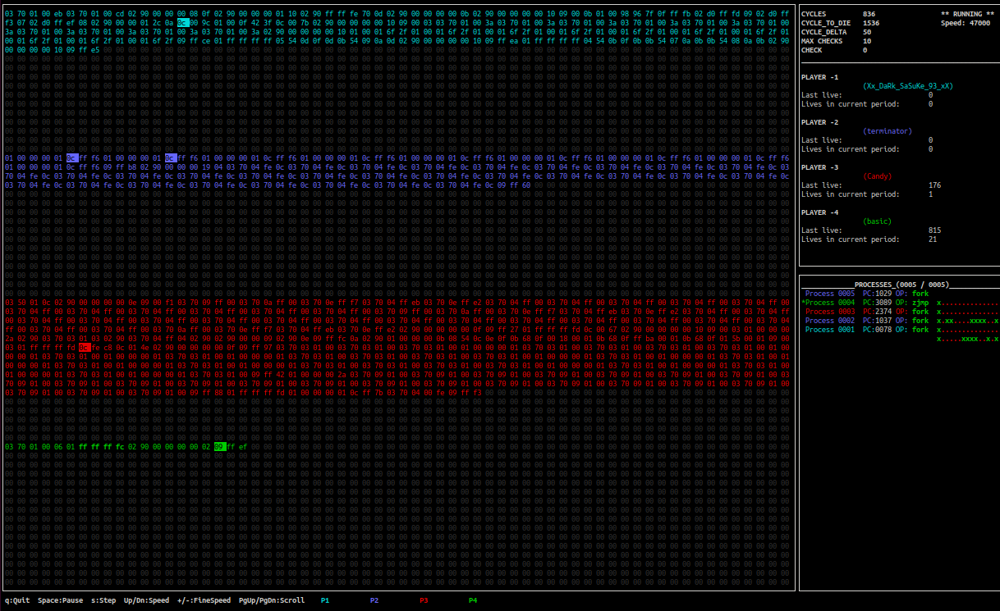

Traduction du projet Corewar (C) en Rust, avec visualiseur ncurses interactif et performances 5–21× supérieures à la version C.

| Touche | Action |
|---|---|
| Espace | Pause / Reprendre |
| s | Step — avance d'exactement 1 cycle puis se met en pause |
| ↑ / ↓ | Vitesse (pas de 500) |
| + / − | Vitesse fine (pas de 100) |
| PgUp / PgDn | Scroller les processus |
| q | Quitter |
Comparaison des performances entre la version C (compilée avec -O2) et la version Rust (compilée en --release).
| Test | C (-O2) | Rust (release) | Ratio |
|---|---|---|---|
| 2 champions / 10k cycles | 20 ms | 8 ms | 2.5× |
| 2 champions / 50k cycles | 50 ms | 10 ms | 5.0× |
| 2 champions / 100k cycles | 51 ms | 11 ms | 4.6× |
| 4 champions / 10k cycles | 160 ms | 13 ms | 12.3× |
| 4 champions / 100k cycles | 1 990 ms | 93 ms | 21× |